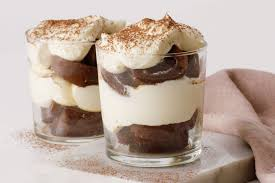

Tiramisu Shots

Description
Be it kids or adults, everyone will love this Italian dessert recipe. To prepare this recipe, you just need a handful of ingredients like whipping cream, mascarpone cheese, sugar, vanilla extract, espresso coffee, coffee liqueur, ladyfinger biscuits and cocoa powder.
Ingredients
- 250gm whipping cream
- 200gm powdered sugar
- 1/4 cup espresso coffee
- ladyfinger biscuit as required
- 200gm mascarpone cheese
- 1 teaspoon vanilla extract
- 2 tablespoon coffee liqueur
- 1 tablespoon cocoa powder
Steps
- Beat the whipping cream
- Add sugar and vanilla extract
- Mix in mascarpone cheese
- Make coffee concoction
- Layer the Tiramisu
- Final garnishing
- Ready to be served